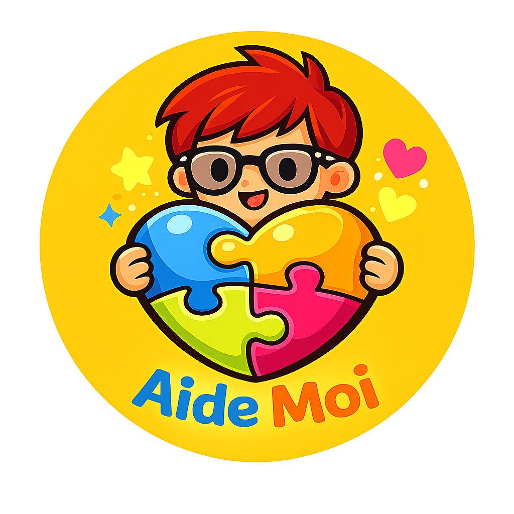

Projet · 2026
Aide Moi
L'application qui accompagne les parents et aidants d'enfants en situation de handicap, au quotidien comme dans l'urgence.
PRÉSENTATION DU PROJET

Aide Moi
Le problème
Le quotidien d'un aidant est une charge mentale constante
📚
Informations éparpillées
Ordonnances, RDV, régimes, contacts médicaux : tout est dispersé entre carnets, SMS et mails.
🔁
Transmissions répétées
À chaque nouvel intervenant (IME, hôpital, relais), il faut tout réexpliquer depuis le début.
🚨
Urgence mal préparée
En cas de crise, les consignes vitales et contacts sont rarement accessibles en un geste.
Aide Moi
La solution
Un carnet de vie numérique, centré sur l'enfant
- Tout au même endroit — profil, soins, RDV, alimentation, journal de bord.
- Pensé pour les aidants — navigation claire, grandes zones tactiles, couleurs apaisantes.
- Prêt pour l'urgence — un onglet dédié pour les contacts vitaux, ordonnances et consignes.
- Facilement partageable — génération d'un récapitulatif PDF pour les relais et intervenants.
- Multi-enfants — un profil par enfant, on bascule d'un simple geste.
AM
Aide Moi
Profil de Hugo
🧒
👧
＋
Profil
Tâches
Médic.
AimeMusique douce · câlins · bain tiède
ÉviteBruits forts · lumière vive
🚨 UrgenceSAMU · Dr Moreau · Pharmacie
Aide Moi
Fonctionnalités
Toute la vie de l'enfant, à portée de pouce
👤
Profil
Aime / n'aime pas, besoins spécifiques.
✅
Tâches
Routine du jour, cochable en un geste.
📅
Séances & RDV
Kiné, ortho, neuropédiatre, IME…
💊
Médicaments
Traitements, doses, moments de prise.
📞
Contacts
Intervenants médicaux et éducatifs.
🎵
Médias
Vidéos et musiques apaisantes favorites.
📓
Journal
Humeur du jour et notes libres.
🍽
Alimentation
Aliments OK/refusés, repas, hydratation.
📋
Liaison
Messages de transmission entre aidants.
🚨
Urgence
Contacts, ordonnances et consignes vitales.
🧾
Récap PDF
Export partageable en un clic.
👨👩👧
Multi-enfants
Un profil par enfant, bascule instantanée.
Aide Moi
Focus
En cas de crise, chaque seconde compte
- Contacts d'urgence cliquables — SAMU, neuropédiatre, pharmacie : appel direct.
- Ordonnances numérisées — accessibles hors-connexion.
- Consignes vitales — allergies, antécédents, conduites à tenir.
- Documents médicaux — protocoles, comptes-rendus, classés.
- Accessible à tout relais — baby-sitter, famille, IME, pompiers.
🏥
SAMU
15
Appeler
👩⚕️
Dr Moreau
Neuropédiatre
Appeler
💊
Pharmacie de garde
3237
Appeler
Aide Moi
Utilisateurs
Une app pensée pour tous les cercles d'aidants
👨👩👧
Parents & famille
Garder une vue d'ensemble et transmettre sans stress.
🏥
Intervenants médicaux
Accéder aux infos utiles avant chaque séance.
🏫
IME & éducateurs
Connaître l'enfant au-delà de son dossier médical.
🧑⚕️
Relais ponctuels
Baby-sitter, aide à domicile, urgences.
💞
Familles d'accueil
Continuité parfaite du suivi, même à distance.
🧑🏫
Associations
Outil de coordination entre bénévoles.
Aide Moi
Technique
Simple, robuste, respectueux des données
📱
Web & Android
HTML/CSS/JS, packagée via Capacitor pour Android.
🔒
Stockage local
Les données restent sur l'appareil de l'aidant.
📶
Hors-connexion
Tout reste consultable sans internet.
🧾
Export PDF
Via jsPDF, un récap propre à partager.
🎨
UI accessible
Contrastes forts, zones tactiles larges.
⚡
Léger
App mono-fichier, démarrage instantané.
🧩
Extensible
Architecture modulaire par onglets.
🛟
Prêt usage réel
Pensée avec des cas concrets d'aidants.
Aide Moi
Feuille de route
Aujourd'hui · Demain · Après
✅
Déjà en place
- 10 onglets fonctionnels
- Multi-profils enfants
- Export PDF récapitulatif
- Build Android (Capacitor)
🛠
En cours
- Ajustements UI & accessibilité
- Notifications locales (rappels)
- Photos dans les documents
✨
Vision
- Partage sécurisé entre aidants
- Synchronisation optionnelle
- Version iOS
Aide Moi
Impact
Moins de charge mentale, plus de temps ensemble
10
Espaces dédiés
1
App pour tout centraliser
0
Donnée envoyée sans accord
∞
Enfants pris en charge
« L'objectif n'est pas de remplacer le lien humain, mais de libérer l'aidant de la logistique pour qu'il puisse se concentrer sur l'essentiel : l'enfant. »
Aide Moi
Et maintenant ?
Découvrez Aide Moi en direct
Envie d'essayer ?
La démo complète est disponible dans le navigateur, et une version Android est prête à être installée.
AIDE MOI · UN PROJET POUR CEUX QUI AIDENT